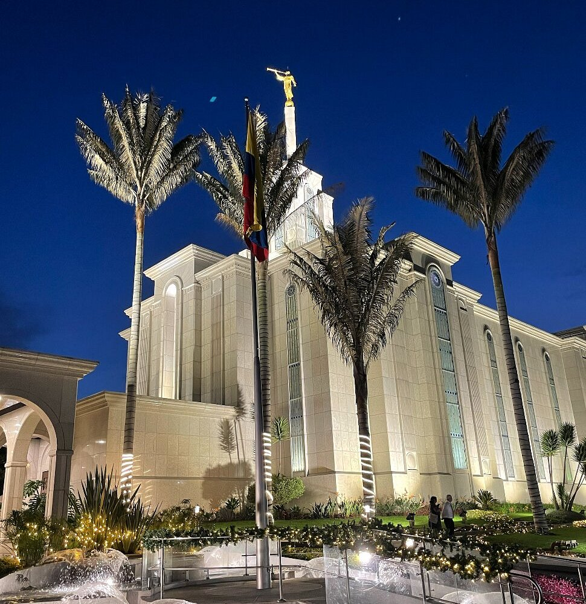

The Bogotá Colombia Temple is the first Latter-day Saint temple built in Colombia and the fifth in South America. Announced in 1984, it was dedicated on April 24, 1999, by President Gordon B. Hinckley. The building features a single spire and an exterior finished with white Brazilian granite. Standing at an elevation of 2,552 meters (8,371 feet) above sea level, it is unique for being one of the highest LDS temples in operation worldwide.
Walther Saavedra | WDD 130
Hello! My name is Walther Saavedra and I am from Bogotá, Colombia. I am a values-driven individual who returned from serving a full-time mission in Costa Rica.Professionally, I work as a trilingual content moderator for Meta, utilizing my language skills in Portuguese and English to maintain safe digital spaces. I am passionate about technology and web technologies, and I hope to leverage my global perspective and language background to become a successful frontend web developer.